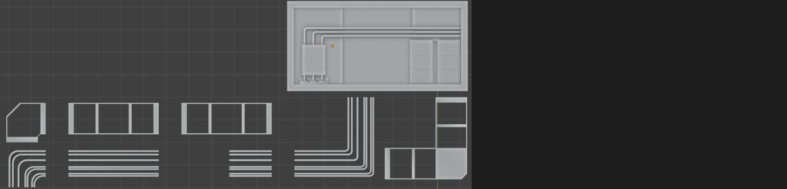
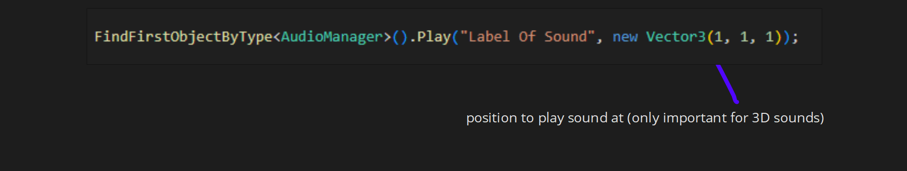
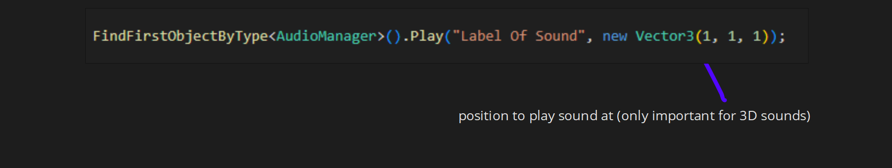

Portfolio
Virtual Reality Design & Development II
Tunnels
Prototyping snapping tunnel segments


Stations
Creating modular subway station tiles





The blast door was intended to close off the tunnel at each station, locking the player in the station.
Unfortunately this idea was scrapped.


Rubbish
To populate the station tiles

Given the quantity of rubbish our environment required, optimizations needed to be considered.
Aiming for the smallest rendering overhead, I ensured that each model had a very low vertex count
while also utilizing a texture atlas allowing for everything to be drawn in a single draw call.


Audio
Sounds FX & Ambience
With sound playing a huge role in creating an immersive experience, I chose to explore looping atmospheric sounds
for our environment, Additionally I created a variety of one shot sound effects to be played on a per event basis.
All the audio produced for the project was created/manipulated using Ableton Live
Music
Atmospheric
One Shot
[Happy Ending Demo]
[Ambience Demo 1]
[Ambience Demo 2]
[Rattling Pipes (Recorded)]
[Blast Door Closing]
[Blast Door Closing (Variant)]
[Torch Crank Demo]
Given the tedious nature of managing Audio Sources in Unity, I reused and enhanced an existing AudioManager that I created for an earlier project.
The AudioManager allows one shot sound effects to be played programmatically. This script utilizes a pool of objects which fill the required sounds needs (position, volume, pitch)
 

...